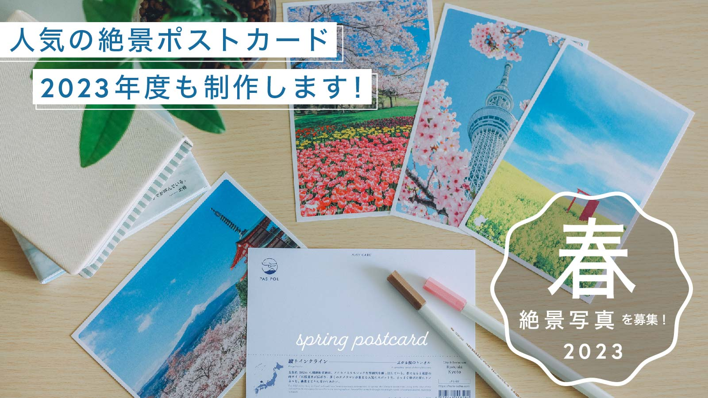
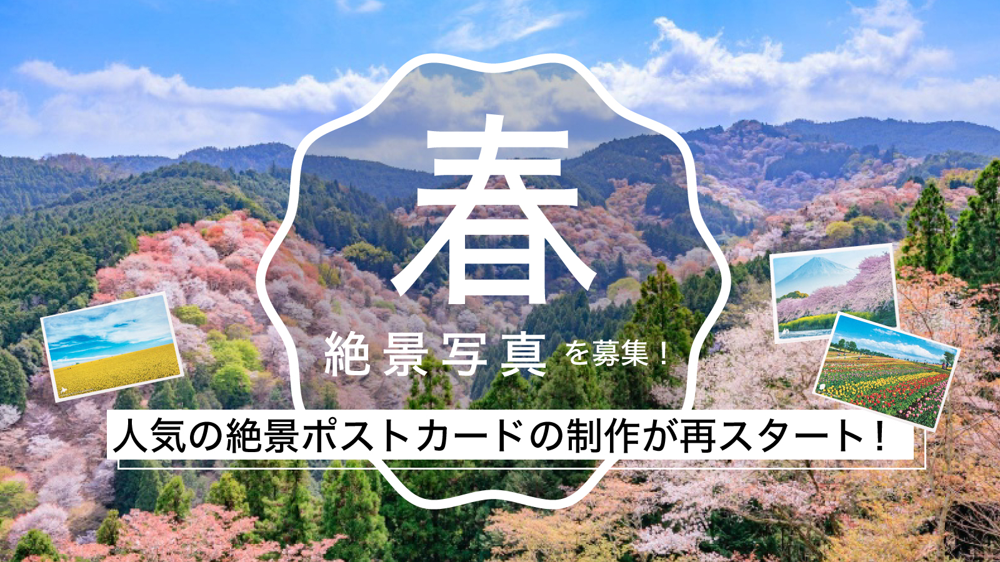

僕たちが作りたいのは
持っているだけで旅に出たくなるモノ。
持っているだけでわくわくするモノ。
それは新しい時代の “パスポート”
僕たちが作るものは、
そんな、存在でありたい。
そして、人と人が繋がる
こんな時代だからこそ、
僕たちは、みんなでひとつのモノを
作ることを追求したい。

それは、自分と世界を繋げる
旅のモノづくりブランド



【2023年度も制作決定】人気の絶景ポストカード「春」の写真を大募集！
2022.4.11
こんにちは、TABIPPOの小井詰です。 東急ハンズやLOFTにて販売されている、旅好きな方とつくってきたPAS-POLの絶景ポストカードの春編、2023年度も制作が決まりました！ 2023年度も今年同様、四季に合わせて募集をしていきます。年間を通して募集をするので、彩り豊かな四季折々の写真のご応募をお待ちしております。まずは、春の風景写真を募集いたします！ 現在の予定では以下のスケジュールで募集を行い（変更の可能性あり）、春以降募集の際にはまた、改めてお知らせをいたします。写真...

人気の絶景ポストカード制作中！「クリスマス」の絶景写真を大募集します
2021.11.29
こんにちは、TABIPPOの小井詰です。 東急ハンズやLOFTにて販売されている、旅好きな方とつくってきたPAS-POLの絶景ポストカードですが、2021年より制作が再開いたしました。 今回の制作は、四季に合わせて募集をしています。年間を通して募集をするので、彩り豊かな四季折々の写真のご応募をお待ちしております。第四弾は、クリスマスの風景写真を募集いたします！ 現在、春、夏と募集が終了し、秋の絶景写真の募集を延長しております！そして最後の募集となるのが、冬の絶景...

【募集期間延長】人気の絶景ポストカード製作中！日本の「秋」の絶景を大募集します
2021.10.12
こんにちは、TABIPPOの中 美砂希です。 東急ハンズやLOFTにて販売されている、旅好きな方とつくってきたPAS-POLの絶景ポストカードですが、2021年より制作が再開いたしました。 今回の制作は、四季に合わせて募集をしています。年間を通して募集をするので、彩り豊かな四季折々の写真のご応募をお待ちしております。第三弾は、秋の風景写真を募集いたします！ 現在の予定では...

【セール情報あり】PAS-POLオンラインショップ閉店のお知らせ
2021.9.15
いつも、PAS-POLのサイトをご覧いただきありがとうございます。 突然ではございますが、この度2021年9月30日をもちまして、PAS-POL公式オンラインショップを閉鎖する運びとなりました。（※PAS-POLのブランドがなくなるわけではありません） 2015年の夏からスタートしたオンラインショップですが、旅が好きな方、TABIPPOを知ってくださってる方、 ライフスタイルにこだわりたい方、などたくさんの方にPAS-POLの商品を公式ショップにて購入いただいたこと、と...

【募集期間延長】人気の絶景ポストカード製作中！日本の「夏」の絶景を大募集します
2021.7.15
こんにちは、TABIPPOの中 美砂希です。 東急ハンズやLOFTにて販売されている、旅好きな方とつくってきたPAS-POLの絶景ポストカードですが、制作が再開しましたのでお知らせいたします。 今回の制作は、四季に合わせて募集をしています。年間を通して募集をするので、彩り豊かな四季折々の写真のご応募をお待ちしております。第二弾は、夏の風景写真を募集いたします！ 現在の予定では以下のスケジュールで募集を行い（変更の可能性あり）、夏以降募集の際にはまた、改めて...

【募集期間延長】人気の絶景ポストカードの制作が再スタート！日本の「春」の絶景を大募集します
2021.5.14
こんにちは、TABIPPOの中 美砂希です。 東急ハンズやLOFTにて販売されている、旅好きな方とつくってきたPAS-POLの絶景ポストカードですが、久しぶりに制作が決定しましたのでお知らせいたします。 今回の制作は、四季に合わせて募集をしていきます。年間を通して募集をするので、彩り豊かな四季折々の写真のご応募をお待ちしております。まずは、春の風景写真を募集いたします！ 現在の予定では以下のスケジュールで募集を行い（変更の可能性あり）、春以降募集の際にはまた、改めてお知らせをいたします。...